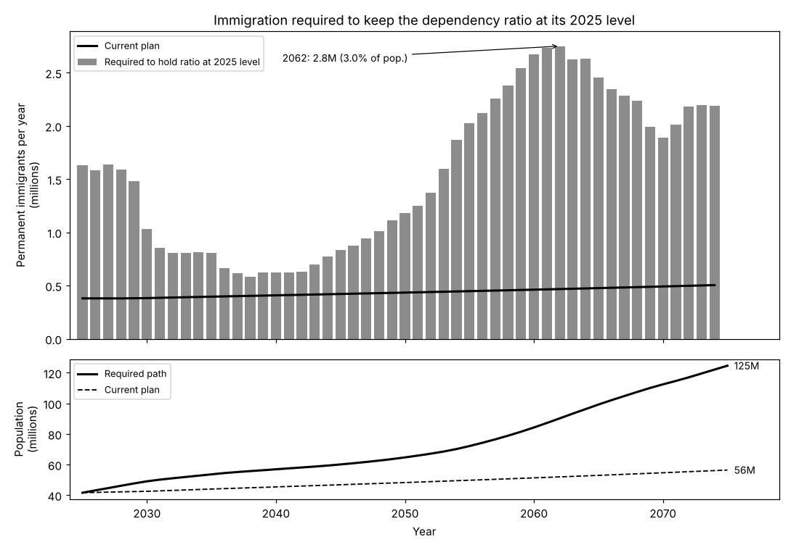
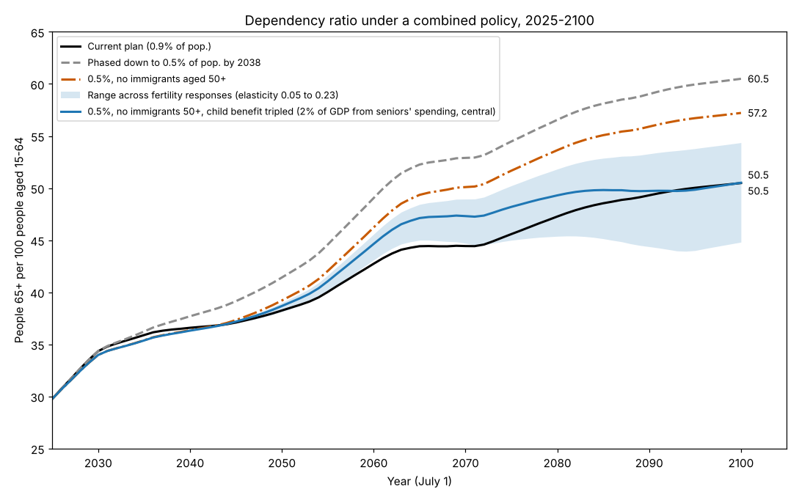
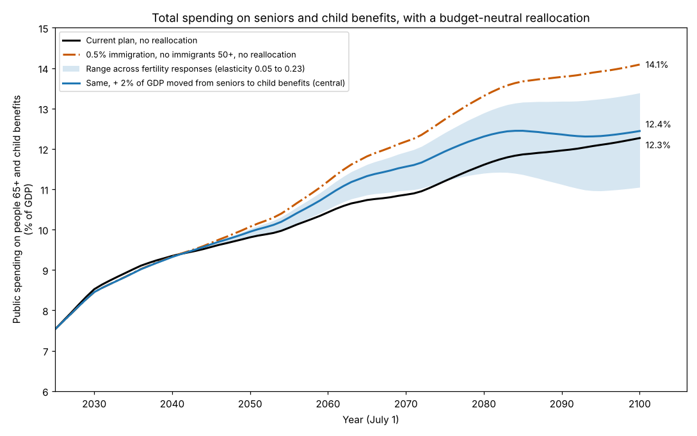

The age demographics of Canada are one of its foremost long-term challenges, and there isn't any singular obvious solution. The demographic issue in Canada interests me for similar reasons as that of American government debt -- the incentive structure for political and economic authorities alike is to kick the can down the road, so that a later and greater burden can be placed on future leaders. This sort of behaviour is nearly inevitable, when the backlash for delaying action against key issues by exacerbating them in the long-run is far less harsh than the consequences of solving those issues in the present would be. Hyman Minsky identified this type of behaviour in a macroeconomic context in his Financial Instability Hypothesis, wherein "over periods of prolonged prosperity, the economy transits from financial relations that make for a stable system to financial relations that make for an unstable system."1 Minsky's simple system through which to classify financial activity, which informs his Financial Instability Hypothesis, is divided into three types of financing. In his 1992 working paper, he defined hedge-financed units as "those which can fulfill all of their contractual payment obligations by their cash flows: the greater the weight of equity financing in the liability structure, the greater the likelihood that the unit is a hedge financing unit." Speculative finance involves meeting current interest commitments out of income, and rolling the principal over. A Ponzi-financed unit meets its interest and principal repayment obligations by either selling assets or issuing further debt. Minsky classified governments under the speculative category, to the extent that they "issue new debt to meet commitments on maturing debt".1 Healthy-functioning governments have every right to operate in the speculative category, because they can always increase their revenue as needed through a combination of taxation and inflation. The vicious cycle begins as the fiscal operation of a government transitions to a Ponzi-like one, because once that behaviour begins, its self-amplifying nature can become increasingly difficult to contain.
In the context of Canada's economic future, I believe few issues are more uncomfortable, yet more essential, than that of demographic sustainability, which I will analyze through a Minskian lens, to the extent that it is a fundamental subset of fiscal sustainability. Over the last decade, a period in which an ageing population has grown to become a major threat to long-term financial stability, immigration has been treated as the primary solution to the issue. In this analysis, I will briefly make the case that immigration is not only an insufficient solution to demographic challenges on its own, but it also justifies complacency regarding the underlying systemic changes that would be required for long-term age-demographic sustainability. High immigration levels alone exhibit strikingly similar characteristics to that of Ponzi finance, wherein a consistent stream of increasing liabilities is undertaken to satisfy previous ones, while underlying instability remains unaddressed.
The dependency ratio, as defined by the number of people aged 65+ per 100 aged 15-64, exhibits very similar behaviour to the debt-to-GDP ratio, in the sense that long-term organic solutions tend to be much further out of reach, and require much more short-term sacrifice, than the quick fix which sends a poorer balance to whomever it may fall on next. Immigration is capable of lowering the dependency ratio today, and quantitative easing is capable of lowering financing costs today, but both of these represent deferred, and perhaps exacerbated, obligations. The inherent moral hazard is that these can reduce pressure for structural reform, because second and third-order effects of both rate suppression and demographic suppression may not be realized for one or two decades and can't be reflected in the current level of the stock market or the ten-year treasury yields. The most fundamental characteristic which both of these strategies exhibit is that with each successive wave of their use, an increasingly aggressive application is necessary to have the same effect. In other words, aside from long-term consequences, they both exhibit diminishing marginal returns even in the short-run. In the case of immigration, newcomers age eventually just as native-born Canadians, and there is no reason to assume that demographic challenges will be any less severe by the time they do. In the interest of avoiding beating a dead horse, given that this is central to previous articles of mine,2 I won't go into much detail on the nature of rate suppression's diminishing potency. Hopefully it will suffice in this article to quote Keynes' General Theory, which asserts that "after the rate of interest has fallen to a certain level, liquidity-preference may become virtually absolute in the sense that almost everyone prefers cash to holding a debt which yields so low a rate of interest. In this event the monetary authority would have lost effective control over the rate of interest."3
Admittedly, the assertion that immigration works similarly to QE is a strong one, but the relevant dynamics can be demonstrated with projections. The claim would not carry much weight otherwise. The mathematical reality is that immigration alone is not a solution to demographic challenges at any feasible long-term level, even if it were to exhibit no second-order economic impact (e.g. labour and housing market imbalances). The data suggests that immigration is one of many solutions to a difficult long-term demographic outlook, but the level of immigration required in the long-run can be nearly halved, provided there are budgetary reallocations from elderly-related spending (e.g. healthcare, OAS, GIS) and to child benefits. Immigration is certainly capable of lowering the dependency ratio, in addition to raising the fiscally tolerable dependency ratio level. However, it is an exogenous factor, and not a particularly sustainable one in the long-run on its own.
The modelling I've done to research this question is broken down into three charts below. It projects population based on the number of projected births, deaths, immigration, and emigration. Both the inputs and the assumptions are from StatCan data.4 Additional sources include the Canadian Institute for Health Information,5 Chief Actuary,6 and the CRA.7 The fertility policy response data comes from studies in other countries, which leads to a wide confidence interval.8 The data collection, modelling, and code are all done with AI assistance (Claude). All relevant files are available on GitHub.9

Data: Statistics Canada. Projection built in Python with AI assistance (Claude). Code and data: GitHub.
The only way immigration alone can sustain today's ratio is by growing at a rapid pace. The Century Initiative's controversial 100 million population goal by 2100 would actually be understating the required immigration level in the absence of any structural change to fiscal dependence on age-cohort ratios, as the projection above would entail a population of 125 million by 2075.10 Newcomers arriving in the 2020s, given their median age of 29 (according to the data in use here),11 would begin entering the dependent side of the ratio in the 2060s, hence the exponential growth in inflow requirements at that point in the chart above.12 What was once an asset eventually becomes a liability, leaving the next incoming wave with a greater burden to account for. This represents the demographic equivalent of Minsky's Ponzi finance. The status quo is only sustainable with exponential increase in inflows. Immigration is an asset to Canada, as it is to many developed nations which face similar challenges. However, when treated as the primary solution, it threatens to compound the problem in the long-run.
There need not be one sole solution to the problem of the dependency ratio. The mature approach is naturally a holistic one, but for the sake of simplicity, this analysis reframes the path to demographic sustainability from a one-pronged approach (immigration only, as shown above), to a two-pronged approach. The objective of this research is to project a scenario of reduced reliance on immigration which would match the same dependency ratio and share of GDP spent on seniors and children in 2100 as the current plan (assuming 0.9% of population is the current Canadian plan). The chart below illustrates various scenarios of immigration and fiscal policy, and their projected impact on the dependency ratio out to 2100.

Data: Statistics Canada, CRA; fertility response from international studies. Projection built in Python with AI assistance (Claude). Code and data: GitHub.
The current three-year plan from the federal government is 380,000 immigrants per year, and the model assumes a base-case of 0.9% of the population annually after that.13 This would result in a 2100 dependency ratio of 50.5, compared to roughly 30 today. Should the admittance be reduced to 0.5% long-term, the dependency ratio would end up at 60.5. If immigration were at 0.5%, with an age limit of 50, this projected ratio would be at 57.2 instead. However, when including a tripled child benefit spending relative to GDP (coming from healthcare, OAS, guaranteed-income), 55% of the immigration level can result in the same dependency ratio by 2100. The key difference is that with the same outcome, a meaningful share of the solution results from structural improvements and native fertility, as opposed to exogenous inflow.

Data: Statistics Canada, CIHI, Office of the Chief Actuary, CRA. Projection built in Python with AI assistance (Claude). Code and data: GitHub.
This third chart is the most important, because it illustrates the long-term payoff from hedge finance principles. Similarly to the previous chart, the immigration restriction scenario absent budgetary reforms represents meaningfully increased fiscal stress. However, budgetary reforms end up being capable of filling the gap of immigration's positive effects by 2100, and doing so in part through endogenous and sustainable fertility growth.
Admittedly, these three charts merely illustrate a limited extent of a vast and complex argument. The most important lesson I learned in my high-school economics class, perhaps more valuable than anything I've learnt in university thus far, was that there is no such thing as a free lunch. If something approximating the budgetary rebalancing outlined above were to be implemented, it would undoubtedly cause meaningful short-term pain. It is also worth pointing out that this analysis is largely theoretical, since even moderate cuts to healthcare spending, in particular, are politically challenging, if not impossible. For better or for worse, the incentive structures in governing bodies don't tend to encourage a century-long perspective. I'd like to clarify that a fall in senior-specific spending of nearly 30% (which does eventually ease its way to an 18% decline) relative to output per worker is not a specific policy proposal, but rather, an outline of what could theoretically equate just over half of the current immigration rate with a nearly equivalent demographic outcome. Long-term projections are naturally speculative. Notably, the fertility response projections for child benefits have wide confidence bands, and even those confidence bands are based on how foreign countries reacted to similar policies. A common criticism of Minsky's outlook on financial instability is how negative it is, but it strikes me as a merely realistic and sober one. Ponzi finance is convenient, whereas hedge finance requires making sacrifices. His prescription that a system can evolve from hedge to Ponzi is less so pessimistic, and more so an objective observation of human time-preference. The Hyman Minsky quote that I keep on this site's homepage is no accident; it is fundamental to understanding so much of how and why policy decisions are chosen.